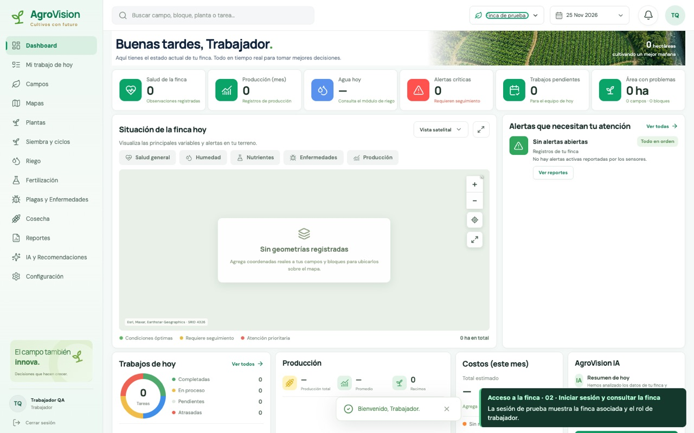
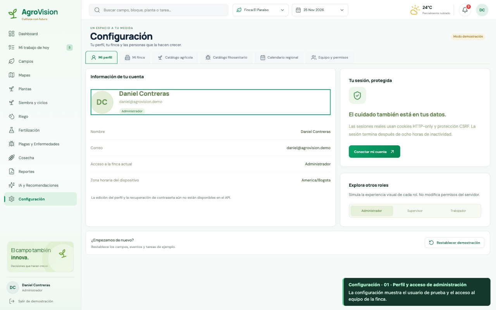

Esta ficha describe las funciones de cuenta, sesión, membresías y configuración de AgroVision. Los recorridos grabados de Acceso y Configuración usan respectivamente una API simulada y datos de demostración. Las pruebas Java verifican el contrato de autenticación y permisos con la API y la base de datos. Evidencia de QA · Resultados históricos
Acceso a la finca
| Requisito funcional | Estado actual |
|---|---|
| Registrar una cuenta con nombre, correo único normalizado y contraseña validada. | Disponible. La contraseña se guarda con BCrypt. Una cuenta recién creada empieza sin membresías. |
| Iniciar, recuperar y cerrar la sesión y consultar el usuario y sus membresías. | Disponible. La API protege las escrituras con CSRF y rota el identificador de sesión y el token al iniciar. El cierre invalida la sesión. La interfaz restaura una sesión vigente y permite volver a iniciar sesión si la carga falla. |
| Seleccionar una finca asignada o crear una finca propia. | Disponible. La creación otorga al usuario el rol de administrador para la nueva finca. La vista conectada carga los datos de la finca seleccionada y distingue los errores de la API. |
| Administrar el ciclo de vida de cuenta y sesión. | Pendiente. Verificación de correo, recuperación y cambio de contraseña, edición de perfil, avisos por acceso, limitación de intentos y administración de sesiones. |
Funciones probadas
Abrir el formulario, iniciar sesión con un trabajador, consultar la finca asignada, cerrar sesión y verificar un token CSRF distinto para cada operación. Aprobado el 25 de noviembre con autenticación simulada. Prueba por módulo · Capturas y video
En el navegador, restaurar una sesión, mostrar un estado de carga, consultar los datos que devuelve la API simulada y evitar que se incorporen tareas de demostración. Suite general de Playwright
Comprobar el correo normalizado y su unicidad, el uso de hash, el rechazo de credenciales o token inválidos, la rotación de sesión y token, la revocación al cerrar y la membresía del creador de la finca. El informe histórico registra las pruebas de backend aprobadas. Pruebas de integración de acceso · Resultado de backend
Registrar una cuenta e iniciar sesión ante la API local para crear la finca de QA. El alta y el recorrido conectado pasaron el 26 de noviembre. Prueba de alta conectada · Recorrido completo de QA · Resultado del recorrido


Equipo y permisos
| Requisito funcional | Estado actual |
|---|---|
| Aplicar permisos independientes por finca y proteger sus recursos. | Disponible. Roles ADMIN, SUPERVISOR, AGRONOMIST y WORKER. La API comprueba membresía y el permiso específico de la operación. |
| Consultar el equipo y asignar o cambiar el rol de una cuenta existente por correo. | Disponible. El administrador y el supervisor pueden consultar los miembros. La asignación y el cambio de rol requieren administrador y se aplican en las sesiones existentes. El propio administrador conserva su rol. |
| Invitar, revocar o suspender acceso, transferir la administración y consultar el historial de cambios. | Pendiente. La asignación actual requiere una cuenta ya registrada. Falta un flujo de invitación y un registro auditable de cambios. |
Funciones probadas
Visibilidad del equipo para la administración de la demostración y ocultación al simular un trabajador. La suite general también verifica ausencia del botón para crear tareas y reducción de la lista a las tareas propias. Prueba por módulo · Suite general · Capturas y video
Listado de fincas y campos según membresía, rechazo de acceso ajeno, rechazo de la auto-degradación del administrador y del cambio de rol por usuarios sin permiso. La creación de un evento toma su autor de la sesión y verifica que el destino pertenezca a la finca. Integración de acceso y aislamiento
En PostgreSQL, otorgar acceso a un trabajador con su sesión abierta, promoverlo a supervisor y comprobar que puede listar miembros y que la asignación de roles y la eliminación de finca requieren el permiso correspondiente. El agrónomo puede configurar el calendario, con acceso al equipo restringido. Pruebas con PostgreSQL
Configuración de perfil, finca y catálogos
| Requisito funcional | Estado actual |
|---|---|
| Consultar perfil, rol, finca actual y zona horaria visible. | Disponible. El perfil muestra nombre, correo y rol, y la zona horaria proviene del dispositivo. En demostración se puede simular el rol y restablecer los datos locales. |
| Mantener el catálogo de cultivos y variedades que utilizan los bloques, ciclos y el material vegetal. | Disponible para consulta y altas. Pendientes la edición, desactivación e historial de cambios. El detalle funcional está en gestión de cultivos. |
| Mantener el catálogo fitosanitario de plagas y enfermedades. | Disponible. Se registran código, nombre y tipo, y se puede editar el nombre y tipo, activar o desactivar. El código permanece vinculado a las inspecciones históricas. El catálogo conectado se comparte entre fincas, con autorización agronómica para modificarlo. Está pendiente la personalización por finca. |
| Administrar ventanas regionales de siembra. | Disponible para consulta y gestión por personal agronómico autorizado. Se configuran cultivo, variedad, región, temporada y ventana con sugerencias para la finca. Gestión de cultivos |
| Editar datos de cuenta y aplicar una zona horaria común de finca. | Pendiente, junto con la auditoría de los cambios de configuración. |
Funciones probadas
Mostrar el perfil y la entrada a Equipo y permisos, crear un problema en el catálogo, mostrarlo en la lista, desactivarlo y cambiar al rol de trabajador de demostración. Aprobado el 25 de noviembre. La suite general verifica además que el problema desactivado desaparece de las opciones para una inspección nueva. Prueba por módulo · Suite general · Capturas y video
Crear un problema en la API, normalizar el código, rechazar el alta del trabajador, editar y desactivar, y comprobar las listas con y sin inactivos. Pruebas de API fitosanitaria
Consultar el catálogo de cultivo y variedad, crear una ventana como agrónomo y comprobar la sugerencia por finca, cultivo y variedad. Prueba de calendario con PostgreSQL
Implementación de referencia en Configuración, API de autenticación, API de miembros y autorización por finca.

